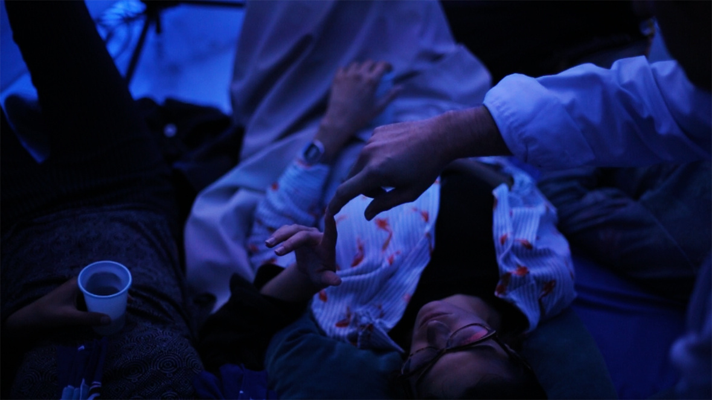
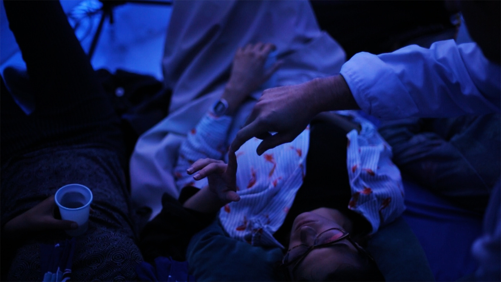

All × WorldRoom × Tradair × S.A.D × Infinite Blade × Shonen GAN × Knives vs Fonts × SVP Zine × Hydra × D.A.D × Deforestagram × About
Diseño para el aniversario de la galería de arte madrileña S.A.D (Storm And Drunk) que recopila varias exposiciones y performances llevadas a cabo durante 2017 Colaboración con Rafael Garcés y Mireia Pérez

 
